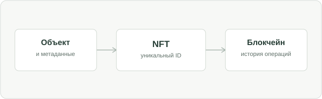

Современный интернет обеспечивает не только публикацию и просмотр веб-страниц, но и доступ к вычислительным ресурсам, цифровым сервисам и средствам совместной работы. Его инфраструктура используется в экономике, образовании и корпоративном взаимодействии.
Облачные вычисления позволяют получать доступ к приложениям из любой точки мира. Искусственный интеллект помогает находить знания в корпоративных системах и автоматизировать повторяющиеся задачи. Блокчейн предлагает способ вести проверяемый реестр операций без обязательного доверия к одному оператору. А технологии виртуальной и дополненной реальности расширяют возможности совместного присутствия.
В материале рассматриваются два направления: токенизация на основе NFT и цифровые средства организации удалённой работы. Первое связано с учётом уникальных цифровых активов, второе — с построением распределённых рабочих процессов.
НАВИГАЦИЯ ПО МАТЕРИАЛУ
Содержание
Разделы посвящены технологиям Web 3.0, токенизации, удалённой работе и практическим исследованиям.
01 / КОНТЕКСТ
АРХИТЕКТУРА ИНТЕРНЕТ-СЕРВИСОВ
Архитектура Web 3.0 и модели управления данными
Web 3.0 представляет собой совокупность развивающихся подходов к построению интернет-сервисов с применением распределённых реестров, смарт-контрактов и цифровой идентичности. Единого общепринятого стандарта Web 3.0 не существует.
В привычных веб-сервисах большая часть данных, правил и транзакций находится под контролем оператора платформы. Такой подход удобен: пользователю обычно достаточно создать аккаунт и доверить сервису хранение информации. Однако вместе с удобством возникает зависимость от конкретной компании, её технической инфраструктуры, правил модерации и условий доступа.
В децентрализованных сценариях часть операций может подтверждаться сетью независимых узлов. Смарт-контракт — программа, работающая в соответствующей блокчейн-среде, — фиксирует допустимые действия и выполняет их при соблюдении заданных условий. Пользователю становится проще проверить, что определённая запись существует и как изменялась её история.
Это
не отменяет необходимости доверия вообще
. Нужно доверять реализации протокола, корректности смарт-контракта, безопасности ключей и источнику данных. Если изначально записано неверное утверждение, его неизменность не сделает утверждение истинным.
ПРИВЫЧНАЯ МОДЕЛЬ
Централизованный сервис
Единый оператор хранит данные и определяет правила их обработки.
Простота управления
Высокая скорость изменений
Зависимость от платформы
РАСПРЕДЕЛЁННАЯ МОДЕЛЬ
Web 3.0
Часть состояний и операций проверяется по общим правилам сети.
Проверяемость записей
Межсервисная совместимость
Более высокая сложность
Именно поэтому Web 3.0 следует оценивать как инструмент решения конкретной задачи, а не как обязательную замену традиционного веба. Когда все участники доверяют одному оператору, централизованная база данных и электронная подпись могут оказаться проще и экономичнее.
02 / ЦИФРОВЫЕ АКТИВЫ
ТОКЕНИЗАЦИЯ ЦИФРОВЫХ ОБЪЕКТОВ
Невзаимозаменяемые токены (NFT)
NFT (non-fungible token) — невзаимозаменяемый токен, который имеет уникальный идентификатор и связан с метаданными цифрового объекта. Записи о токене и операциях с ним могут проверяться в блокчейне.
Обычные взаимозаменяемые единицы одного типа эквивалентны друг другу: например, один условный цифровой балл может заменяться другим. NFT, напротив, представляет индивидуальный экземпляр. У него есть собственный идентификатор, адрес смарт-контракта и связанные метаданные. В экосистеме Ethereum такую модель стандартизирует
ERC-721
; стандарт
ERC-1155
позволяет работать с несколькими типами цифровых единиц в одном контракте.
АУДИО · ПОЯСНЕНИЕ
Что подтверждает запись NFT
Запись о токене, цифровой файл и права на объект необходимо рассматривать отдельно. Аудиофрагмент раскрывает границы технической проверяемости токена.
Текст аудиофрагмента
Невзаимозаменяемый токен фиксирует уникальную запись в блокчейне. При этом токен и связанный с ним цифровой файл не являются одним и тем же объектом. В реестре обычно находятся идентификатор токена, сведения о владельце и ссылка на метаданные. Сам файл может храниться за пределами блокчейна. Проверка истории операций подтверждает существование записи, но не доказывает авторские права или достоверность исходных сведений. Поэтому практические проекты требуют проверки эмитента, защиты ключей и правил отзыва ошибочных сертификатов.
ИНТЕРАКТИВНОЕ СРАВНЕНИЕ
Сравнение взаимозаменяемых токенов и NFT
01
02
03
Три разных цифровых объекта
Каждый токен имеет уникальный идентификатор. Токен №01 не равнозначен токену №02: за ними могут стоять разные метаданные и права.
При выпуске NFT в реестр обычно заносятся данные токена и ссылка на метаданные. Изображение, видео или документ при этом может храниться в другом месте — например, на обычном сервере или в распределённом хранилище. Поэтому доступность самого файла и сохранность блокчейн-записи нужно рассматривать отдельно.
Правовой статус NFT
Контроль над токеном сам по себе не означает автоматическое приобретение исключительных прав на связанное произведение. Правовой режим зависит от договора, законодательства и условий использования. Этот вопрос отдельно рассматривается в работе Соколовой Е. С. и Филимоновой А. И.
Читать исследование
Области применения NFT
Практическая ценность появляется там, где необходимо подтверждать
индивидуальность, статус или историю объекта
. Это могут быть цифровые пропуска, игровые предметы, учёт лицензий, билеты или сертификаты обучения. Например, организация может выдать документ, соответствующий уникальной записи, а проверяющая сторона — удостовериться, каким эмитентом он был выпущен.
Но блокчейн не проверяет, имел ли эмитент право выдавать сертификат. Также нужно предусмотреть исправление ошибок, отзыв недействительных документов, защиту персональной информации и восстановление доступа при утрате ключей. Исследователи
Н. А. Кашеварова и И. С. Старикова
рассматривают NFT как цифровой инструмент для бизнеса, но организационные и юридические вопросы остаются неотъемлемой частью внедрения.
03 / КАК ЭТО УСТРОЕНО
Жизненный цикл NFT
Последовательность этапов создания, выпуска, хранения и передачи NFT приведена на интерактивной схеме.

ЭТАП
01
/ 04
Создаётся цифровой объект
Автор или организация готовит объект и его метаданные: название, описание, ссылку на содержимое и необходимую информацию об эмитенте. Истинность этих сведений должна быть проверена вне блокчейна.
Техническая схема упрощена для объяснения процесса. Разные платформы могут реализовывать этапы по-разному.
04 / УДАЛЁННАЯ РАБОТА
УДАЛЁННАЯ И ГИБРИДНАЯ ЗАНЯТОСТЬ
Технологическая основа удалённой работы
Развитие широкополосного интернета, облачных сервисов, видеосвязи и систем управления задачами обеспечило технологические условия для дистанционной и гибридной занятости.
Иллюстративное изображение удалённого рабочего места. Для полноценной работы вне офиса требуются не только компьютер и связь, но и защищённый доступ к общим сервисам и документам.
Совместная работа больше не всегда требует физического присутствия в одном месте. Распределённые команды используют облачные хранилища, электронный документооборот, мессенджеры и цифровые доски для обсуждения задач и обмена результатами.
Однако перенос файлов в облако сам по себе не создаёт эффективную рабочую среду. Важны общие правила хранения данных, организация коммуникации, прозрачность задач и доступность документации. Без них сотрудники сталкиваются с дублированием сообщений, поиском актуальных версий документов и потерей контекста.
Удалённый формат расширяет географию найма и сокращает время поездок, но способен размывать границы между рабочим и личным временем. Исследования гибридной занятости подчёркивают значимость управленческих правил и социальных связей внутри коллектива.
Подробнее об особенностях гибридной занятости
.
В России дистанционный труд регулируется положениями Трудового кодекса, обновлёнными
Федеральным законом № 407-ФЗ
. Технические возможности при этом должны дополняться понятными соглашениями, распределением ответственности и защитой корпоративной информации.
05 / РАБОЧАЯ СРЕДА
ИНФРАСТРУКТУРА И БЕЗОПАСНОСТЬ
Цифровые инструменты и организация работы
Цифровая инфраструктура удалённой работы включает пользовательские устройства и сети, прикладные сервисы, средства управления доступом и организационные регламенты.
На первом уровне находятся ноутбуки, смартфоны и каналы связи. На втором — инструменты видеоконференций, совместного редактирования документов, облачные хранилища и трекеры задач. Третий уровень обеспечивает идентификацию пользователей, права, электронный документооборот и защиту информации. Четвёртый определяет, как команда фиксирует решения, передаёт знания и оценивает результаты.
04
Правила и культура
Роли, сроки, асинхронная коммуникация, документация
03
Идентификация и безопасность
MFA, контроль доступа, шифрование, журналирование
Сети и устройства
Подключение, рабочая станция, резервные каналы
Если документы разбросаны между почтой, чатами и личными дисками, сотрудники начинают тратить время на поиск актуальной версии и уточнение контекста. Интеграция систем, единые правила хранения и доступная документация часто дают не меньший эффект, чем добавление новых функций.
Применение искусственного интеллекта
Искусственный интеллект способен расшифровывать встречи, превращать обсуждения в перечень задач, искать информацию в базе знаний и предлагать первые версии ответов. При этом результат может оказаться неточным. Особое значение приобретают проверка человеком, указание исходных документов и запрет неконтролируемой передачи конфиденциальных данных.
Применение виртуальной и дополненной реальности
Виртуальные и дополненные пространства полезны, когда команда взаимодействует с объёмными моделями: при проектировании, обучении, технических консультациях и демонстрациях оборудования. Для обычного обсуждения документа полноценная VR-среда, как правило, неоправданно сложна. Новые технологии следует применять избирательно — в сценариях, где их возможности действительно важны.
Информационная безопасность удалённого доступа
Удалённый доступ расширяет поверхность возможных атак: работники подключаются из домашних сетей, используют различные устройства и внешние сервисы. Поэтому нужны многофакторная аутентификация, шифрование соединений, актуальные обновления, резервное копирование и минимально необходимые права доступа.
Подход
Zero Trust
предполагает, что запрос на доступ проверяется в зависимости от пользователя, устройства и контекста, а не разрешается лишь потому, что соединение исходит из «внутренней» сети. Руководство
NIST SP 800-46 Rev. 2
систематизирует меры защиты удалённого доступа и пользовательских устройств.
ВИДЕО · СХЕМА ПРОЦЕССА
Проверка удалённого доступа
Последовательно показаны запрос пользователя, проверка личности и устройства, оценка политики и решение о предоставлении доступа. Такая последовательность поясняет, почему сетевое подключение не равнозначно автоматическому доверию.
Продолжительность: 24 секунды. Схема упрощена и не описывает конкретный программный продукт.
06 / ИССЛЕДОВАНИЯ
Исследования и практика
В разделе приведены результаты научного исследования, пример организации распределённой работы и технический стандарт для токенов NFT.
НАУЧНОЕ ИССЛЕДОВАНИЕ · 2024
1 612
участников
Гибридная работа и удержание сотрудников
В рандомизированном исследовании работников Trip.com гибридный график с двумя днями из дома сопровождался снижением увольнений примерно на треть без обнаруженного ухудшения показателей производительности. Это результат конкретного эксперимента, а не универсальная гарантия.
GitLab публично описывает свою модель распределённой команды: асинхронные коммуникации, письменные процессы, открытую базу знаний и оценку результата вместо присутствия в офисе. Это пример внедрения, а не доказательство применимости для любого бизнеса.
Интерфейс ERC-721 определяет правила учёта и передачи невзаимозаменяемых токенов в совместимых смарт-контрактах Ethereum. Стандартизация помогает кошелькам и приложениям работать с токенами разных проектов.
Доля сотрудников, прекративших работу за время исследования, %
Офис 5 дней
7,2%
Гибридный график
4,8%
Источник: Bloom, Han, Liang,
Nature, 2024
. Сравниваются группы в одном эксперименте; шкала графика 0–10%.
ВОПРОС ПО МАТЕРИАЛУ
01 / 01
Выберите ситуацию, в которой распределённый реестр может иметь преимущества перед централизованной базой данных.
07 / ОБОБЩЕНИЕ
Выводы
Развитие интернет-технологий характеризуется сочетанием облачной инфраструктуры, распределённого хранения записей, интеллектуальной обработки данных и новых способов совместной работы. Практическая ценность технологии определяется не новизной подхода, а соответствием конкретной задаче и условиям эксплуатации.
Токенизация NFT позволяет идентифицировать уникальные цифровые объекты и проверять историю операций. Вместе с тем запись в блокчейне не устанавливает автоматически право собственности или авторское право на связанный объект и не удостоверяет правильность исходных сведений. Поэтому применение NFT требует надёжного управления ключами, проверки эмитентов, доступности метаданных и правовых механизмов.
Для удалённой и гибридной занятости наиболее значимы стабильный сетевой доступ, совместимые облачные сервисы, документирование процессов и меры информационной безопасности. Искусственный интеллект способен снижать долю рутинных операций, а VR/AR полезны преимущественно при работе с пространственными моделями. Внедрение таких инструментов целесообразно оценивать по измеримым результатам, включая доступность систем, время выполнения задач, безопасность данных и затраты.
Таким образом, выбор архитектуры цифровой системы должен основываться на сравнении альтернатив и их ограничений. Распределённый реестр оправдан там, где отсутствует единый доверенный оператор, а для многих внутренних корпоративных процессов централизованное решение может быть проще. Устойчивость удалённой работы зависит от согласованности технических и организационных мер, а не от количества используемых сервисов.
ИСТОЧНИКИ
Источники и материалы
Научные публикации, техническая документация, нормативные материалы и практические кейсы для дополнительного чтения.